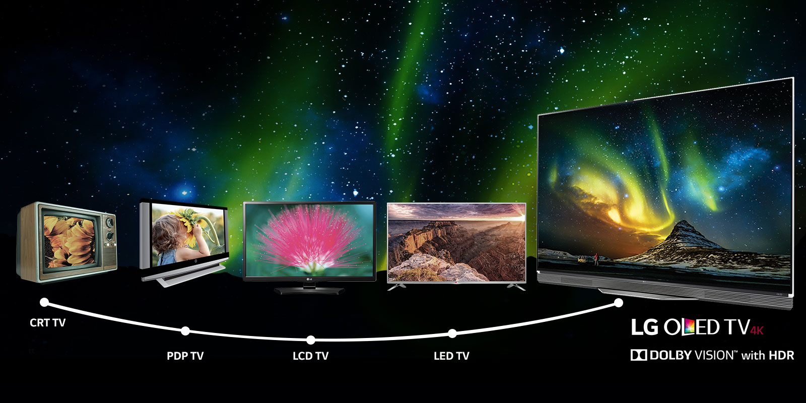

The short answer: Yes, although you may need a special cable depending on what type of input/output ports you’re working with.
All modern HDTVs have HDMI inputs—some older HDTVs have DVI inputs instead—and some have VGA inputs for “PC use.”
If your graphics card has an HDMI output, you’re good to go: Just use an HDMI cable to connect your PC to your HDTV.
If your graphics card only has DVI outputs, I suggest snagging a cheap HDMI-to-DVI cable and plugging it into your HDTV’s HDMI input.
Although some HDTVs (and some graphics cards) have VGA inputs/outputs, this is not the ideal choice—it’s an analog signal that will give you a far fuzzier, lower-resolution image than an HDMI or DVI signal.
tv Will it look good?
Maybe, but this depends on a number of factors, including what you want to use your HDTV monitor for. Most reasonably-priced HDTVs top out at 1080p, or 1920-by-1080 pixel resolution. But 4K/UHD, or 3840-by-2160 pixel resolution, is dropping price each generation. On a 15.6-inch laptop screen,
the Windows desktop at 1080p looks pretty darn good from a couple of feet away. On a 32-inch HDTV screen…not so much. Definitely have to consider a higher resolution.
What’s important here is pixel density, or the number of pixels packed into one square inch of the screen. A 15.6-inch laptop screen
has the same number of pixels as the 32-inch HDTV screen, but the laptop has a much higher pixel density (141.21ppi) than does the HDTV
(68.84ppi). Thus, the laptop’s screen will appear clearer, sharper, and more detailed than the HDTV’s screen when viewed from the same
distance. The importance of pixel density decreases with viewing distance; that’s why the iPhone’s “Retina” screen has a density of
326ppi, while the MacBook Pro’s “Retina” screen has a density of just 227ppi.
tv Is it worth it?
If you’re looking to get the best bang for your buck, an HDTV isn’t necessarily going to save you money over a monitor.
In fact, if you’re purchasing a new display, I recommend sticking with the tried-and-true computer monitor. For one thing,
smaller, cheaper HDTVs are typically 720p or lower featured 1080p resolution, not 4K, while similarly-priced monitors will almost always be at least 1440P or low end 4K.
So if you’re looking for something under 27 inches, an HDTV will probably be more expensive.
If you’re looking for something larger than 27 inches, remember that pixel density decreases significantly with every few
inches you gain, and there’s a reason HDTV-makers suggest sitting several feet away from their creations. If you need a display
that will multi-task as an up-close work/email display as well as movie/entertainment display, you’ll want something with a high
enough pixel density that text won’t be a pain to read. At this point, 4K/UHD will be your only option for a HDTV as a computer monitor.

tv 10 Best TV's to Consider
Series
Highlight
Sizes
Pro's
Con's
LG OLEDE6 series
The OLED TV technology so beloved of AV enthusiasts for the past few years is taken to bold new heights by LG's groundbreaking OLEDE6 series.
55-inch, 65-inch
Incredible black level response
Jaw-dropping ultra-thin design
Missing details in very bright areas
Various subtle picture noise issues
Samsung KS9500 range
As well as delivering some of the sharpest 4K pictures yet, the KS9500s also go further than any other TVs to maximise the impact of HDR
65-inch, 78-inch, 88-inch
Jaw-dropping, class-leading HDR pictures
Unexpectedly good sound
Curved screen won't suit all
Some backlight 'blooming' in dark scenes
Sony KD-75XD9405
When it comes to 4K, size matters. A point this 75-inch Sony monster rams home in emphatic style.
75-inch
Huge screen tips you into home cinema territory
Lovely picture quality
Android TV's interface is clunky
Yucky remote control
Panasonic DX802 range
A reasonably affordable TV that's able to do a truly convincing job with HDR as well as 4K.
50-inch, 58-inch
Good value
Bright, detailed pictures
Native contrast isn't the best
Some backlight issues
Samsung KS7000 range
The KS7000 delivers an HDR-friendly level of specification you just can't find elsewhere for the same sort of money.
49-inch, 55-inch, 60-inch
Aggressively priced
Good all-round picture quality
Some backlight clouding issues
No 3D
Panasonic DX902 series
Brand new LCD screen technology and stellar processing helps the DX902 range deliver spectacular 4K and HDR impact.
58-inch, 65-inch
Bright, contrast-rich pictures
Clever and usually effective local dimming technology
Chunky bodywork
Some motion blur
LG OLEDB6 Series
The OLEDB6 series is the most affordable way to get your hands on LG's 2016 OLED TV technology.
55-inch, 65-inch
Gorgeous, contrast-rich picture quality
Spectacularly thin design
Detail clipping in bright areas
Occasional brief colour noise
Philips 65PUS7601
Brilliant backlight controls make this surprisingly affordable Philips 4K TV one of the year's most pleasant surprises.
65-inch
Excellent backlight control
Great price for the picture quality on offer
Complicated picture set up
Android TV interface is clunky and impersonal
Sony XD9305 series
Sony's new Slim Backlight Drive technology helps the XD9305 series produce some of the most beautiful 4K and HDR pictures. Period.
55-inch, 65-inch
High contrast for an edge LED TV
Beautiful colour and detail performance
Some quite defined light 'blocks' with high contrast HDR content
Android TV interface isn't very friendly or slick
Panasonic DX750 range
An eye-catchingly affordable way to bag yourself outstanding 4K standard dynamic range and decent HDR pictures.